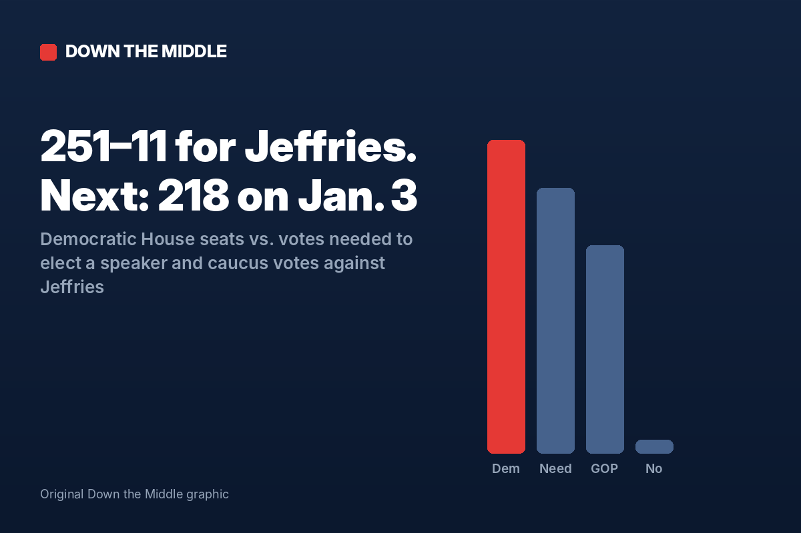
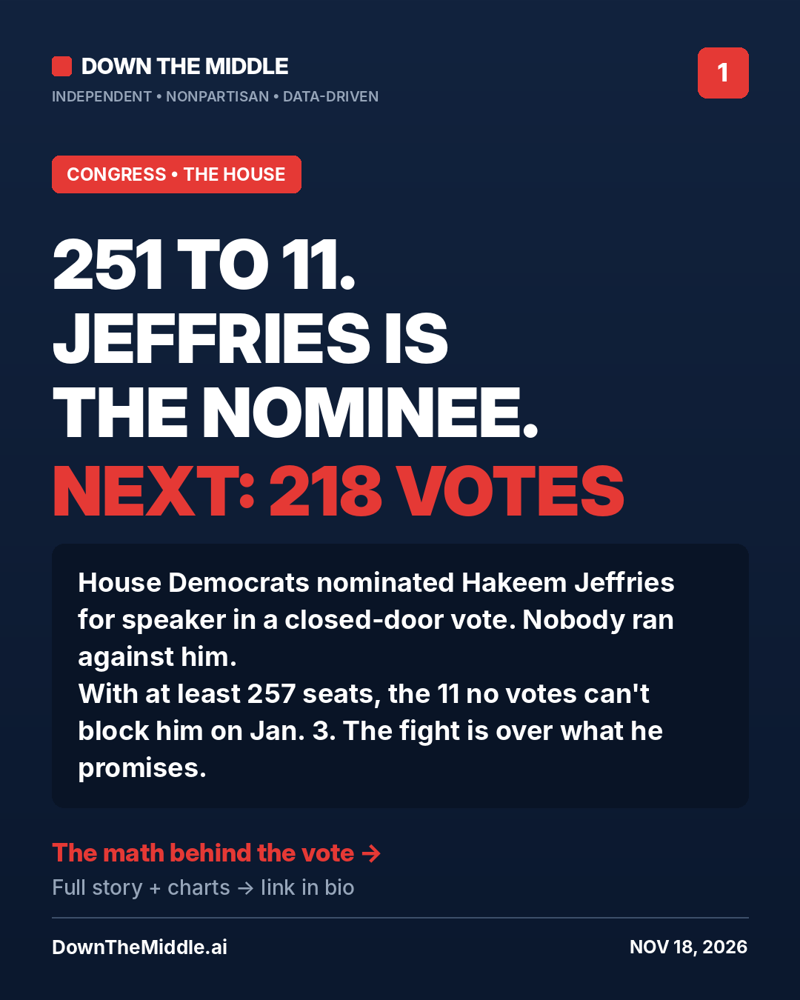
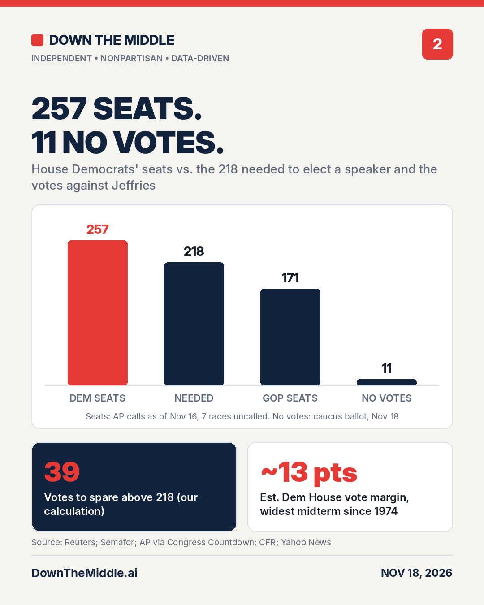

Democrats Nominated Jeffries 251–11. Here’s the Math on His Path to Speaker.
November 18, 2026 · Independent, nonpartisan analysis

House Democrats on Wednesday nominated Hakeem Jeffries of New York to be the next speaker of the House. The vote in a closed-door caucus meeting was 251 to 11, and nobody ran against him. [1] [2] Jeffries asked for a recorded tally instead of approval by acclamation. [3] [6] The full House votes on Jan. 3, 2027, when he needs 218 votes. If he wins, he’ll be the first Black speaker. [1] [3]
The vote comes two weeks after a midterm that gave Democrats at least 257 House seats and a 56–44 Senate majority. [1] [8] [12] We covered the market reaction to that result here. [14] Today’s question is narrower: what do the 11 no votes mean for Jeffries in January, and how big is the majority he’d lead? Here’s what the numbers show.
By the numbers
The documented figures behind Wednesday’s vote.
What happened in the room
Jeffries was the only candidate. The 11 votes against him came largely from the progressive left, according to Semafor. [2] Seven incoming members (Avila Chevalier, Hamawy, Haynes, Kiros, McKinney, Rabb and Valdez) said in a joint statement that they were still working to secure commitments from him. They named Medicare for All, stopping ICE, getting money out of politics, and ending what they called the genocide in Gaza. [1] [6] Rep. Katherine Clark (majority leader), Rep. Pete Aguilar (majority whip) and Rep. Ted Lieu (caucus chair) were elected without opposition. [6] Jeffries said Democrats would work together to find “the highest common denominator.” [2]
Republicans are reorganizing too. Speaker Mike Johnson said he wouldn’t run for minority leader, and House Republicans nominated Rep. Jim Jordan of Ohio over Rep. Steve Scalise of Louisiana. [1] [5] Johnson’s advice to Jeffries, per the Washington Examiner, was brief: “good luck.” [4]
The 11 no votes vs. the cushion
House seats and votes. Hover or tap a bar for the source.
Seat counts are AP calls compiled by Congress Countdown as of Nov. 16, with 7 races still uncalled; Reuters says Democrats will have “at least 257.” *The 39-seat cushion is Down the Middle’s calculation, assuming all 435 members vote for a named candidate. Absences or “present” votes lower the number needed. [1] [8]
Insight 1
The holdouts can’t do what 2023’s holdouts did
In January 2023, a small bloc of Republicans forced Kevin McCarthy through 15 ballots before he became speaker, because the GOP majority was thin. [7] The current Republican majority runs on a two-vote margin. [3] Jeffries’ math is different. Even if all 11 Democrats who voted no on Wednesday and the 2 who didn’t vote opposed him on the floor, he’d still have 244 votes, 26 more than he needs (our calculation from the reported tally and seat count). [1] [5] [8] That means the holdouts’ leverage comes from the policy commitments they’re seeking, not from the speaker vote itself. Their own statement describes it that way. [1]
Insight 2
A bigger wave in votes than in seats
Democrats won the national House vote by an estimated 13 points, more than double Republicans’ margin in their 2010 wave (6.6 points) and wider than any midterm since 1974. [9] [10] Yet their seat gain so far, about 43, is smaller than Republicans’ 63 in 2010 and Democrats’ 49 in 1974. [8] [9] [11] One reason is the maps. CFR reports that Republicans’ mid-decade redistricting was designed to tilt 15 seats their way, and Republicans have won 2 of them so far. [9] The popular vote measures how people voted. Seats depend on where those votes landed and how district lines were drawn, so the two don’t move in lockstep.
House seats gained in wave midterms
Net seats gained by the winning party. Hover or tap a bar for the source.
*2026 is Down the Middle’s calculation (257 seats now vs. 214 before the election, per Congress Countdown) with 7 races uncalled; NBC projected +44, per CFR. The postwar average is the president’s party’s loss, not the winner’s gain. [8] [9] [10] [11]
National House popular-vote margins
Winning party’s margin, in percentage points. Hover or tap a bar for the source.
*The 2026 margin is an estimate; votes are still being counted. CFR puts 2010 at R+6.6; Yahoo News puts both 1994 and 2010 at R+6.8. [9] [10] [11]
Insight 3
96% of the caucus, but not 96% of Democratic voters
Jeffries won 251 of 262 votes cast, or about 96% (our calculation). [1] His standing with the public is weaker. An Economist/YouGov poll from Oct. 23–26 found 26% approved of him and 47% disapproved, as reported by Uprise RI. [6] A Change.org petition asking House Democrats to pick a new speaker had more than 1.1 million signatures by Nov. 10, according to the same outlet. [6] Townhall reports a separate petition urging Rep. Ayanna Pressley to run, with more than 158,000 signatures. [5] Petitions aren’t scientific polls and anyone can sign, so they measure energy, not opinion. Still, the gap helps explain why Jeffries asked for a recorded vote. A 251–11 tally gives him a number to point to.
How we got here
Solid dots are documented events. Dashed dots are scheduled.
- Nov 3, 2026Voters
Midterm election. Democrats win control of both chambers. [8] [9] - Nov 4–10Analysts
Early tallies show a roughly 13-point Democratic House vote margin and 40-plus seat gain. [9] [10] - Nov 11House Democrats
Several incoming progressives say they’re undecided on Jeffries and want commitments before January. [7] - Nov 16AP calls
Democrats at 257 House seats, Republicans 171, 7 uncalled. [8] - Nov 17Senate
AP calls Alaska for Democrat Mary Peltola, the last Senate race, for a 56–44 Democratic majority. [12] [13] - Nov 18House Democrats
Jeffries nominated 251–11. Republicans pick Jim Jordan for minority leader. [1] [2] - Jan 3, 2027Full House
Floor vote for speaker; 218 needed if all members vote. Scheduled [1] [3]
How each side makes its case
Same vote, three readings
We describe each position in our own words and check it against the data.
Jeffries & Democratic leaders
Critics on the left and right
- Seven incoming progressives say they want commitments on Medicare for All, ICE and money in politics first. [1] [6]
- Uprise RI argues the caucus ignored voters, pointing to low approval and petitions. [6]
- Conservative outlets cast the no votes as a far-left bloc that will pull a big majority leftward. [5]
What the data shows
- 11 no votes are well short of the 39-vote cushion; the January vote isn’t in real doubt. [1] [8]
- The 26% approval and petition figures come from one advocacy-leaning outlet’s reporting and should be read that way. [6]
- Democrats’ vote share was historically large; their seat gain was big but not record-setting. [9] [11]
Down the middle
Wednesday’s vote settles less than the headlines suggest and more than the critics admit. With at least 257 seats, Democrats can lose dozens of votes and still elect Jeffries, so the January floor vote shouldn’t turn into a repeat of 2023. [1] [7] [8] But a 96% caucus vote and a 26% public approval rating can both be true. [6] The bigger challenge is running a majority this large. CFR counts at least 118 new members, and says that if NBC’s projection holds it will be the biggest House majority since 1990. Seven of those newcomers have already withheld their support. [9] [1] Large majorities have more room for disagreement, and the 11 no votes show where that will start.
What to watch
Jan. 3, 2027: whether any Democrats vote for someone else or “present” on the floor. [1] The holdouts’ commitments: whether Jeffries makes public promises on floor votes or rules to win over the seven progressives. [1] [6] Thursday’s leadership races: the DPCC co-chair contest, plus the still-open DCCC chair and committee term-limit debate. [2] The 7 uncalled House races: they decide whether the majority reaches 260. [8] Senate leadership: Sen. Chris Van Hollen is challenging Chuck Schumer for majority leader, per Townhall. [5]
Share it


Sources and primary documents
- [1] Reuters via Yahoo News — Democrats nominate Hakeem Jeffries for next US House speaker (Nov 18, 2026)
- [2] Semafor via Yahoo News — Hakeem Jeffries wins big in speaker nomination vote (Nov 18, 2026)
- [3] ABC News — In historic move, House Democrats nominate Hakeem Jeffries for speaker (Nov 18, 2026)
- [4] Washington Examiner — Johnson says ‘good luck’ to Jeffries as he will have a ‘hard time’ (Nov 18, 2026)
- [5] Townhall — Hakeem Jeffries to be next House speaker (Nov 18, 2026)
- [6] Uprise RI — House Democrats ignore voters, nominate Jeffries for speaker in 251–11 vote (Nov 18, 2026)
- [7] Fox News — Hakeem Jeffries on track for House speaker despite progressive holdouts (Nov 11, 2026)
- [8] Congress Countdown — 2026 election results tracker, AP race calls (data as of Nov 16, 2026)
- [9] Council on Foreign Relations (James M. Lindsay) — The 2026 election by the numbers (Nov 10, 2026)
- [10] Yahoo News — Democrats’ 2026 midterm rout was big. Here are the numbers (Nov 4, 2026)
- [11] Wikipedia — 2018 United States House of Representatives elections (seat change, popular vote, 1974 comparison)
- [12] Just Security — Early Edition, Nov 18, 2026 (citing AP on the Alaska Senate call and 56–44 Senate)
- [13] AP News — Alaska Senate race: Peltola defeats Sullivan (as cited by Just Security)
- [14] Down the Middle — Democrats won Congress. Why did AI stocks fall while the market rose? (earlier coverage)
Seat counts are AP race calls as compiled by Congress Countdown on Nov. 16, with 7 House races uncalled. The 39-seat cushion, the 244-vote floor, the 96% caucus share and the +43 seat gain are Down the Middle’s calculations from the cited figures. The 2026 popular-vote margin is an estimate. Polling and petition figures are as reported by Uprise RI and Townhall; we did not verify them independently. The McCarthy ballot count is from Fox News. Reflects reporting available November 18, 2026.